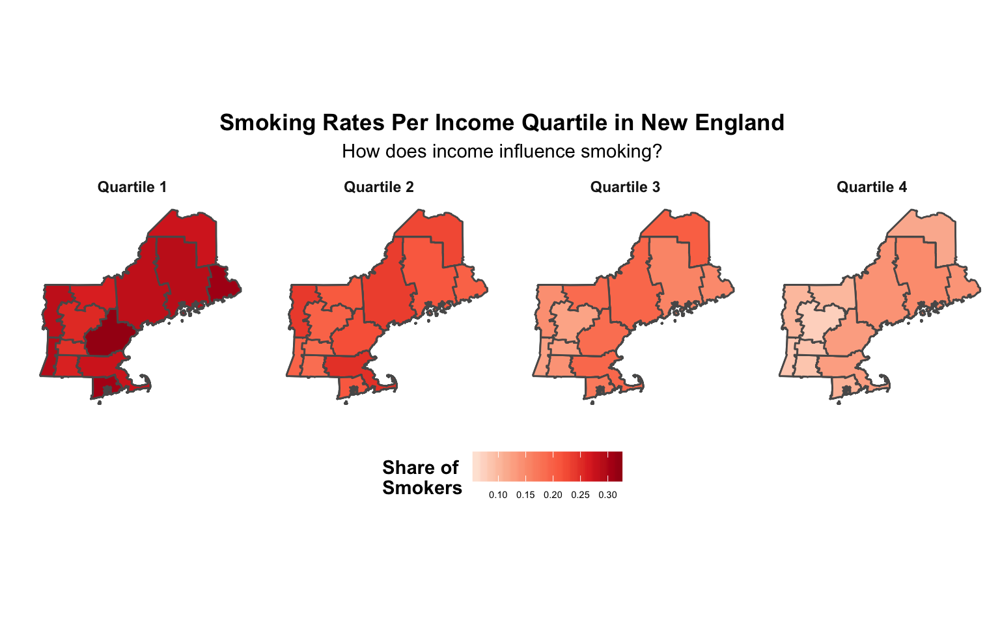
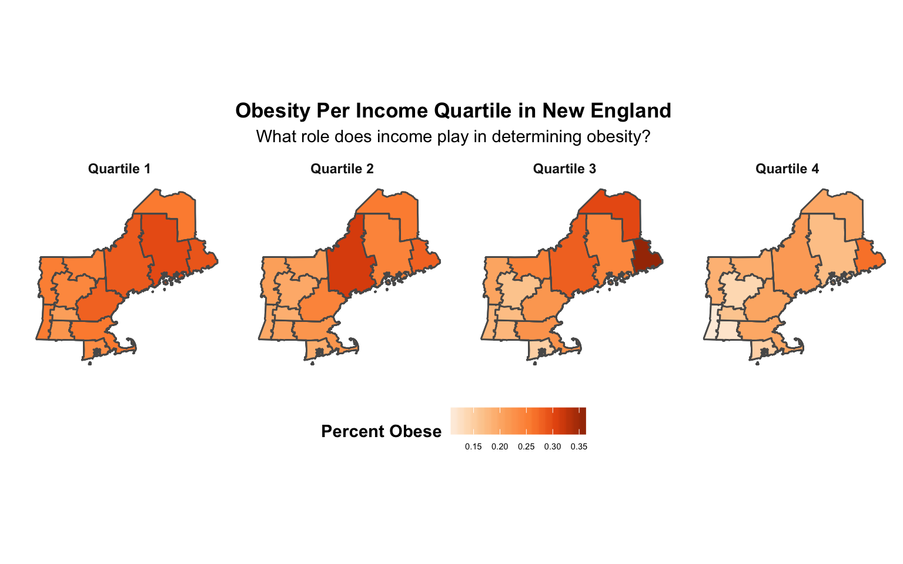
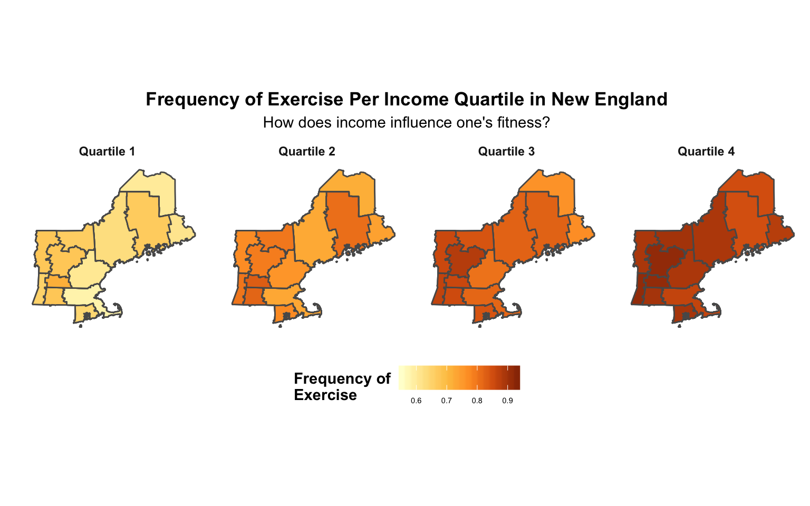

To further investigate the possible factors which may influence low-income peoples’ relatively depressed life expectancies, we used survey data from the Behavioral Risk Factor Surveillance System (BRFSS) during the year 2000, found in Chetty et. al’s data set.1The BRFSS is the nation’s premier provider of health-related telephone surveys which collect state data about U.S. residents regarding their health-related behaviors.2 The three health indicators we considered by income quartile were tobacco usage, obesity rates, and exercise rates.
A 2016 report on the economics of tobacco published by the National Cancer Institute and World Health Organization found that a significant amount of health disparities between the rich and poor can be attributed to the differences in tobacco habits between income groups.3
 The data for New England states embodies this trend. Smoking rates for the lowest quartile are much higher than those in the highest quartile. This could be a result of historic targeted marketing of tobacco products to low-income individuals by attaching coupons to food stamps and giving out free cigarettes in housing projects.4 Additionally, the tobacco industry fights to keep prices low so that low-income people can continue to foster their nicotine addiction by spending billions of dollars each year to fight cigarette taxes and price increases.5 Further, low-income communities have less access to resources to help them quit smoking, and are exposed to less education on the health hazards of smoking.6
The U.S. is one of the wealthiest countries in the world yet it has one of the highest rates of obesity. The statistics are shocking: one-third of the American population is obese, while another third is overweight7 Given the negative health effects and shortened life expectancy associated with obesity, we investigated whether obesity rates varied across income quartiles similar to life expectancy. The graphic below examines the prevalence of obesity per income quartile in New England.

The data above shows that obesity rates decrease as income increases in the New England area. Therefore, this analysis points to a relationship between obesity and poverty. The Mayo Clinic proposes a reason behind this trend: often, poverty-stricken areas have such low access to healthy foods that they are called “food deserts”.8 Since there is an association between sedentariness, poor health, and obesity, we felt that exercise rates might explain low-income obesity in New England. We investigate this in the next section.
As an attempt to further explain the factors which may contribute to low-income people’s high levels of obesity, we created the visualization below which displays New England’s major commuting zones, colored as a fraction of the exercise each person surveyed participated in during the past 30 days, grouped by income quartile.

Given the prior visualization results, the fact that this graphic also shows that low-exercise rates are correlated with low-income is not surprising. However, the reason behind it is shocking. A survey conducted by the health promotion group, Shape Up America suggests that what keeps poor people from exercising more is not a lack of knowledge, but a lack of means.9 Low-income people face major obstacles to exercising such as not feeling safe exercising outdoors in their neighborhoods because of violence, not having access to public facilities, and the inability to afford private facilities.10 This suggests, improving the poor’s access to safe exercise facilities could prove largely effective at combating prevailing health deficits.
Our findings were consistent with national trends in scholarship: health inequality is related to income inequality, and low income areas tend to be less healthy than higher income areas. Wealthier areas in New England tended to have higher life expectancies, lower tobacco use, lower rates of obesity, and higher exercise rates. While universal healthcare might be the solution to addressing these national problems, this analysis suggests that introducing targeted solutions such as offering affordable nicotine-quitting resources, access to healthier foods, and safe public health facilities, may prove more effective at addressing health impacting behaviors.
Chetty, Raj, et al. “The Association between Income and Life Expectancy in the United States, 2001 - 2014.” The Equality of Opportunity Project, Opportunity Insights, 2016, www.equality-of-opportunity.org/data/index.html#health.↩
“Behavioral Risk Factor Surveillance System.” Centers for Disease Control and Prevention, National Center for Chronic Disease Prevention and Health Promotion , Division of Population Health, 16 May 2014, www.cdc.gov/brfss/index.html“↩
“Monograph 21: The Economics of Tobacco and Tobacco Control.” National Cancer Institute, Division of Cancer Control & Population Sciences, The National Cancer Institute and the World Health Organization, 2016, cancercontrol.cancer.gov/brp/tcrb/monographs/21/index.html.↩
“Why Are 72% of Smokers from Lower-Income Communities?” Truth Initiative: Inspiring Tobacco Free Lives, Truth Initiative, 24 Jan. 2018, truthinitiative.org/news/why-are-72-percent-smokers-lower-income-communities↩
Truth Initiative, “Why Are 72% of Smokers from Lower-Income Communities?”↩
NCI and WHO,“The Economics of Tobacco and Tobacco Control”↩
Levine, James A. “Poverty and Obesity in the U.S.” American Diabetes Association: Diabetes Journals, American Diabetes Association, Nov. 2011, diabetes.diabetesjournals.org/content/60/11/2667.↩
Levine,“Poverty and Obesity in the U.S.”↩
Dreyfuss, Ira. “Poor Lack Means to Exercise, Survey Says : Health: The Less People Earn, the More Likely They Are to Say That Their Neighborhood Is Unsafe for Workouts, Poll Finds.” Los Angeles Times, Los Angeles Times, 26 Nov. 1995, articles.latimes.com/1995-11-26/news/mn-7235_1_poor-people.↩
Dreyfus, “Poor Lack Means to Exercise…”↩